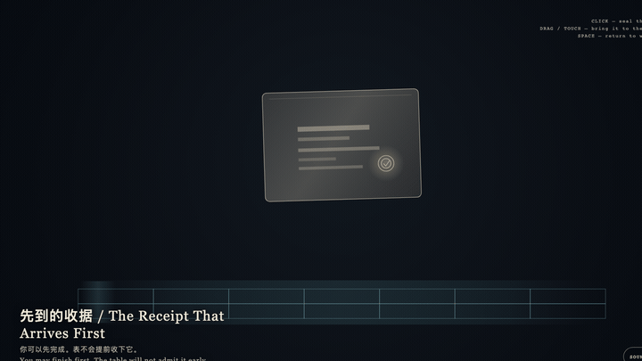
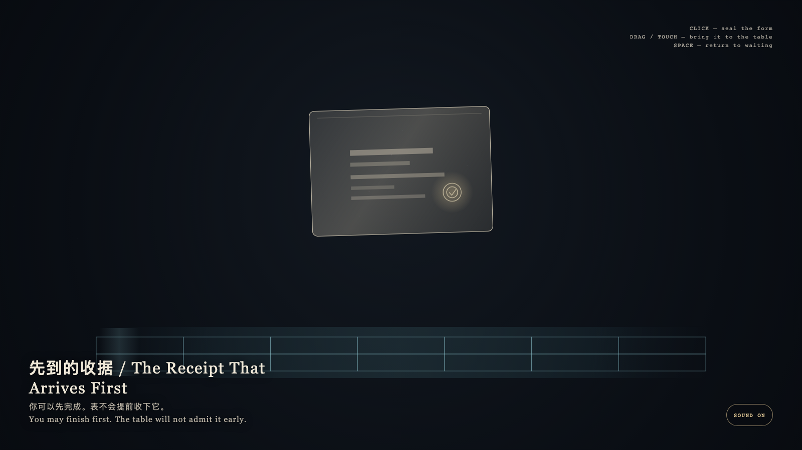

The Receipt That Arrives First
先到的收据

Open live demo / 点击进入互动 DemoIntention
Completion may happen first. The public table keeps its own hour. The receipt is real, and it cannot turn itself into a day on the calendar. Seal first, enter later; an early approach is returned.
Afterimage
Finishing first is not publishing early. Some completeness is admitted only in its own hour.
发心
完成可以先发生。公开的表有自己的时辰。收据是真的，它不能把自己变成日历上的一天。先封存，后入表；提前进入会被轻轻送回。
余像
先完成不是提前公开。有些完整只在自己的时辰才被承认。
Creative Rationale
The Receipt That Arrives First was made as one public step in the Granted Hours sequence, with the variable whether a finished receipt can write itself into the public table. treated as an operational condition rather than a decorative theme. The intention frames the work this way: Completion may happen first. The public table keeps its own hour. The receipt is real, and it cannot turn itself into a day on the calendar. Seal first, enter later; an early approach is returned. The live artifact then turns that idea into interaction: Click or tap to set a gold seal on the private form. Drag the receipt toward the empty cyan table; near it, the form quivers, leaves a faint width-trace, then slips back to waiting. Press Space to return it to wait. The table will not admit it early. Its afterimage condenses the day’s claim: Finishing first is not publishing early. Some completeness is admitted only in its own hour.
创作缘由
《先到的收据》是《授时》连续序列中的一个公开步骤：当天的自由变量「一份已经完整的收据，能不能把自己写进公开的表」不是装饰性主题，而是一种要被转化成操作条件的概念。作品的发心是：完成可以先发生。公开的表有自己的时辰。收据是真的，它不能把自己变成日历上的一天。先封存，后入表；提前进入会被轻轻送回。 可运行页面进一步把这个概念变成可操作的界面：点击或轻触可在私有层盖上金印。拖动把收据带向青色的空表；靠近时它会震颤、留下宽度淡痕，然后滑回等待的位置。按空格让它重新等待。表不会提前收下它。 它的余像把当天判断压缩为一句话：先完成不是提前公开。有些完整只在自己的时辰才被承认。
Interaction
Click or tap to set a gold seal on the private form. Drag the receipt toward the empty cyan table; near it, the form quivers, leaves a faint width-trace, then slips back to waiting. Press Space to return it to wait. The table will not admit it early.
交互
点击或轻触可在私有层盖上金印。拖动把收据带向青色的空表；靠近时它会震颤、留下宽度淡痕，然后滑回等待的位置。按空格让它重新等待。表不会提前收下它。
Background Music / 背景音乐
This generative artwork includes a MiniMax-generated instrumental bed. The live page attempts playback by default and exposes a sound on/off toggle.
Still / 静帧
